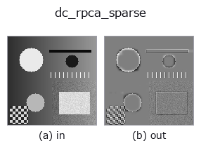

decomposition op• 数据种类:image → image
• 调用:fullseye.apply(img, "dc_rpca_sparse", a=0.5, b=0.5)(2-D 的模型是一张图 + 两个标量旋钮 a,b∈[0,1])

*图为在 128×128 合成输入上实际运行的输出。左为输入，右为输出。点云以俯视散点显示(亮度 = z)，一维序列为折线，体数据为沿 z 的最大值投影，视频为中间帧，复数图像为幅值；无法成像的返回值直接显示数值。*
扫描旋钮 a(0.1 / 0.5 / 0.9，另一旋钮取默认):
▸ dc_rpca_sparse: knob a sweep (docs site)
*旋钮 b 不改变输出(实测: 0.1 / 0.5 / 0.9 相同)。*
换别的图像(合成场景 / 照片 / 硬币。上排为输入，下排为对应输出。旋钮取默认):
▸ dc_rpca_sparse: other inputs (docs site)
*第 4 列是彩色 (H,W,3) 输入。此算子能正确处理颜色而不跨通道(不把颜色通道当作第三个空间轴卷积)。*
鲁棒 PCA 的稀疏（缺陷／异常）残差 = 输入 - 低秩，位于 0.5。
> 以下的详细说明为原文 —— 摘要与标题已翻译。
`dc_rpca_lowrank と同じ inexact ALM の PCP 分解 M = L + S` を行い、
スパース項 `S を 0.5 を中心に置いて返す(clip(S + 0.5, 0, 1)`)。背景と
同じ画素は 0.5、背景より明るい孤立点は 0.5 より上、暗い点は下に出る符号つき
残差で、飽和しない範囲で `dc_rpca_lowrank + (この出力 - 0.5) == 入力`。
`a はスパース重み λ = (0.5 + 1.5*a)/sqrt(max(m, n))` で、大きいほど
`S が疎(小さな残差は 0 に丸められ、はっきりした欠陥だけ残る)、a=0`
ではほぼ全画素に残差が出る。`b` は未使用。
長辺 64 超の画像は縮小して `L を解き、S` は元解像度で
`S = soft(M0 - L_up, λ/μ_final) として作り直す(縮小した S` を拡大
すると 1 画素欠陥がにじんで振幅を失うため)。入力は [0,1] の 2 次元に揃え、
返り値は同形 float64、[0,1]。全零画像では `S = 0` で一様 0.5。例外時は
fail-soft で入力のクリップ版が返り、台帳に記録される。
後段では `|出力 - 0.5| が欠陥の強さなので、threshold` 系の op で 0.5 から
離れた画素を拾う(明側・暗側のどちらを拾うかはしきい値の向きで決まる)。周期
背景(織物・格子・ディスプレイ)上の点欠陥・傷の検出向けで、非周期背景では
残差に背景の凹凸がそのまま混ざる。
• gallery2d_texture_freq 族使用指南
• blas_threads_and_memory — 行列分解が遅い理由の知識 — BLAS スレッド・キャッシュ・メモリ配置
• 示例数据目录(下载 URL / 许可证) —— 2-D 用 skimage.data(BSD/公有领域)加合成图,3-D 给出真实数据源(Stanford/PDS 等)的下载 URL。
• 算子来历与参考文献 —— 该算子族所依据的研究/方法出处。
• 算法的正典(作者・年份)与用途见上面的族使用指南。
下面的程序已确认可以运行(与图相同的输入)。在 Studio 帮助中，此块会变成按钮，可当场加载并运行。
dc_rpca_sparse 0.50 0.50
▸ Load this pipeline · Load & run
• gallery2d_texture_freq — py -3.11 examples/gallery2d_texture_freq.py
image 作为输入)identity · gaussian · mean_box · bilateral · unsharp · median · min_filter · max_filter
decomposition)dc_structure_texture · dc_texture_residual · dc_rpca_lowrank · dc_retinex · dc_local_contrast_norm · dc_homomorphic
*Provenance: ops.py — 2D 算子登记表。本条目由 tools/opdocs.py md 自动生成(请勿手工编辑)。*
© 2026 Kazufumi Furuse — Fullseye operator documentation. Licensed under Apache-2.0.
{kind=link}
{kind=link}